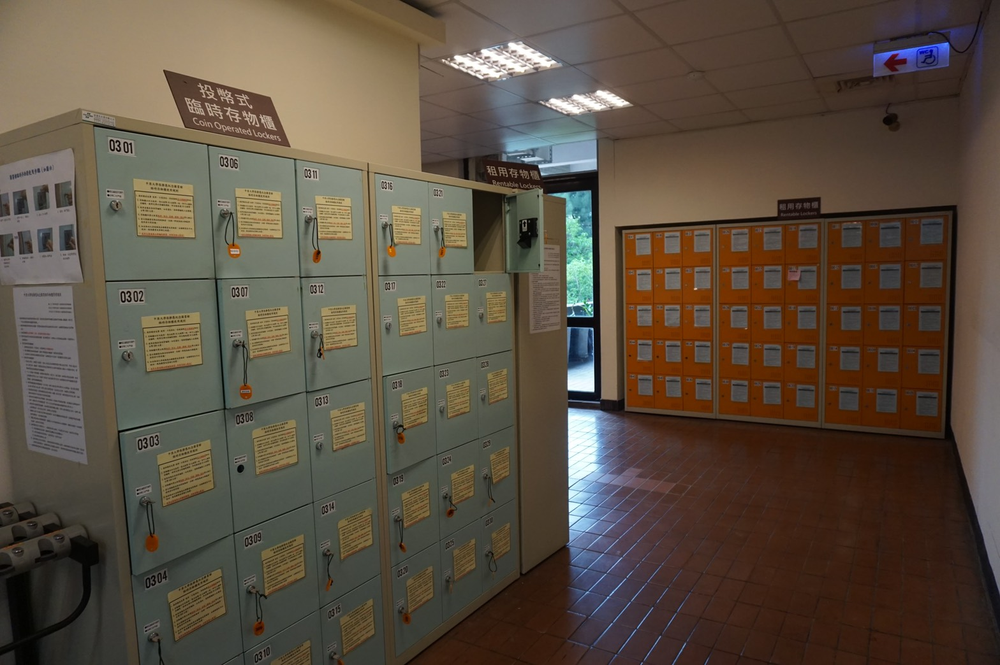

愛心傘
服務對象：限中原大學教職員工生及校友。
申請證件：憑本校服務證 / 學生證 / 校友證一張至本館二樓出入口服務台登記借用。
歸還時間：使用完畢請儘速歸還，俾能方便下一個使用者；最遲請於七天內歸還，如有逾期歸還，
每日罰款新台幣 5 元整；如有遺失，須繳交遺失賠償及製傘費用 1 把新台幣 150 元整。
愛心口罩
服務對象：限當日入館閱覽且有感冒咳嗽症狀的讀者方可以申請。
申請證件：憑本校服務證/學生證/校友證/圖書館核發有效閱覽證等一張， 至本館二樓出入口服務台登記使用。
歸還時間：免收費用，但請有感冒咳嗽症狀的讀者配合珍重愛惜使用，請勿任意浪費。
書香袋
借書冊數多又沒帶提袋時，總是困擾著愛讀書的讀者。圖書館為您準備了書香袋供您借用，
只要您具備借書資格即可於借書時洽出納台借用。
讀者若在圖書館內遺失或拾獲物品，請洽二樓出入口服務台辦理。
本館已開放攜帶背包入館，於二樓入口左側及地下閱覽室設有存物櫃可自行使用。
失物招領
存物櫃
為便利讀者使用本館資源時存物之需求，提供簡易型臨時存物櫃及長期租用存物櫃二種服務。
